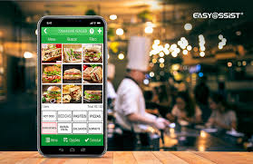

Meu primeiro projeto em HTML onde apresento informações sobre mim, iniciei o blog apenas com HTML, e com o tempo, fui aprendendo um pouco mais sobre CSS e decidi implementar um pouco no meu projeto, para aprimorar um pouco a estetica e deixar o visual mais moderno e agradavel, com uma decoração simples porém eficaz.
Quero desenvolver uma solução que une tecnologia e saúde para melhorar diagnósticos. inicialmente tenho algumas ideias, como programar um site com um banco de dados de todas as doenças possiveis e com todos já registrados, o medico terá mais agilidade para auxiliar o paciente com maior taxa de acerto.
Uma ideia de Sistema que guardará todos os dados do paciente pelo CPF e poderá ser resgatado em todos os hospitais e clinicais do país, facilitando ao medico o acesso a exames e historico do paciente, onde não será mais necessario imprimir exames ou esperar o exame sair para impressão, o documento será enviado imediatamente assim que estiver pronto para o sistema, que permitirá o cadastro do paciente diretamente da sua residencia pelo mesmo site porém, com o acesso de paciente só poderá modificar dados pessoais, documentos medicos precisarão da autorização de um medico ou supervisor.
Uma ideia de aplicativo para conectar alunos e professores e facilitar o aprendizado e a comunicação, transformaria o site portal do aluno em um aplicativo, aumentando a praticidade no acesso, os dados do site seriam transferidos para o aplicativo onde o aluno poderia acessar de forma offline e facilitaria o acesso de boletos, calendarios, e documentos a partir da última conexão com a internet.

O sistema terá foco na comunicação do recepcionista, que terá um controle mais efetivo da capacidade do restaurante com o garçom que registrará quais mesas estão disponiveis para serem utilizadas. O sistema também auxiliará na comunicação entre o garçom os cozinheiros, o garçom anotará os pedidos diretamente no aplicativo e, ao fim do pedido, enviará uma nota ao sistema que estará programado na cozinha, onde terá duas opções, a versão automatica e manual, a versão automatica mostrará os pedidos atraves de uma tela que terá apenas o controle remoto para abrir o pedido, voltar para um pedido que já passou se necessario, apos 5 minutos em um pedido aberto o sistema avançará para o proximo pedido, oque poderá ser programado no sistema, tendo uma opão para personalizar o tempo desta opção ou apenas desativa-la, a versão manual enviará o pedido para algum aparelho celular que será utilizado por um funcionario para notificar a cozinha do andamento dos pedidos. Este sistema terá um tag em cada mesa, para auxiliar o garçom no registro das vezes vazias, onde ele registrará no sistema quando a mesa estiver disponivel e qual estará disponivel, o tag também auxiliará ao cliente acompanhar o andamento do seu pedido de maneira simples, vermelho ainda não foi visualizado, amarelo está sendo preparado e verde quando estiver finalizado, indo a caminho da mesa do cliente.